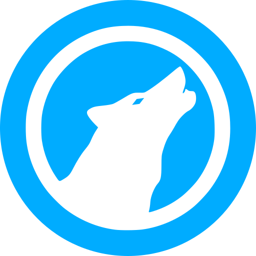
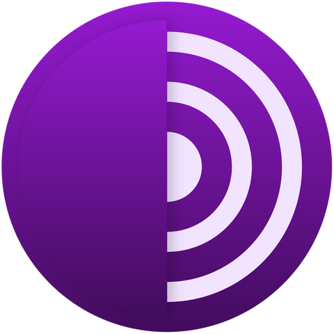
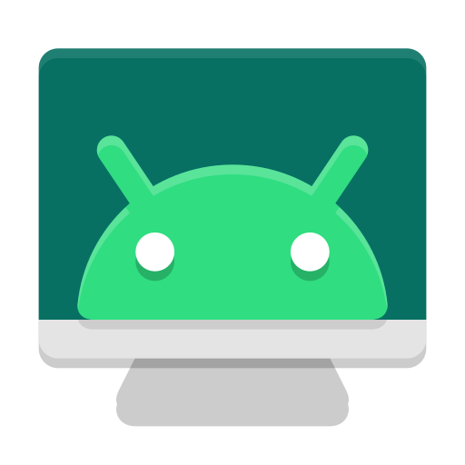
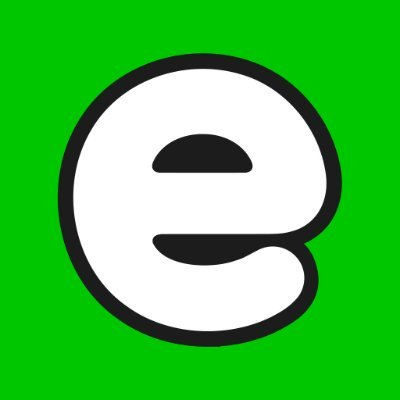
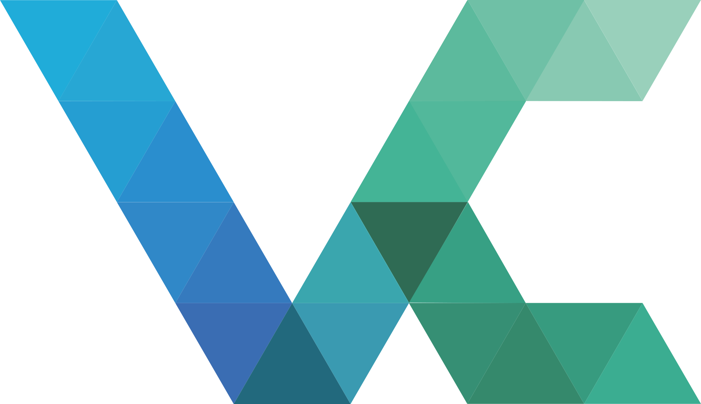
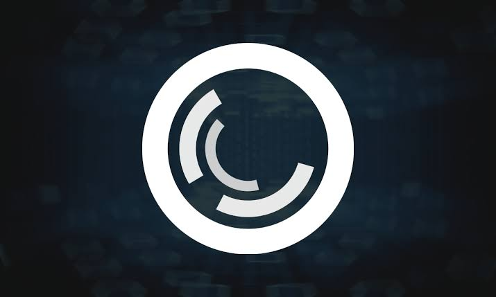
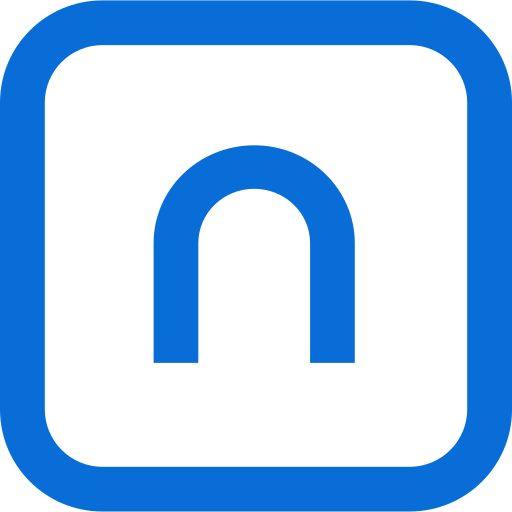
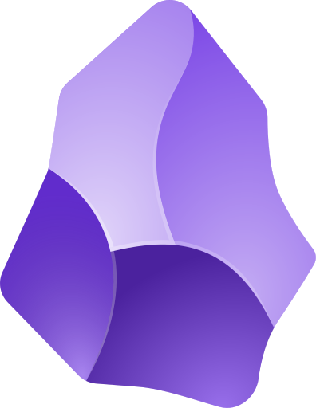
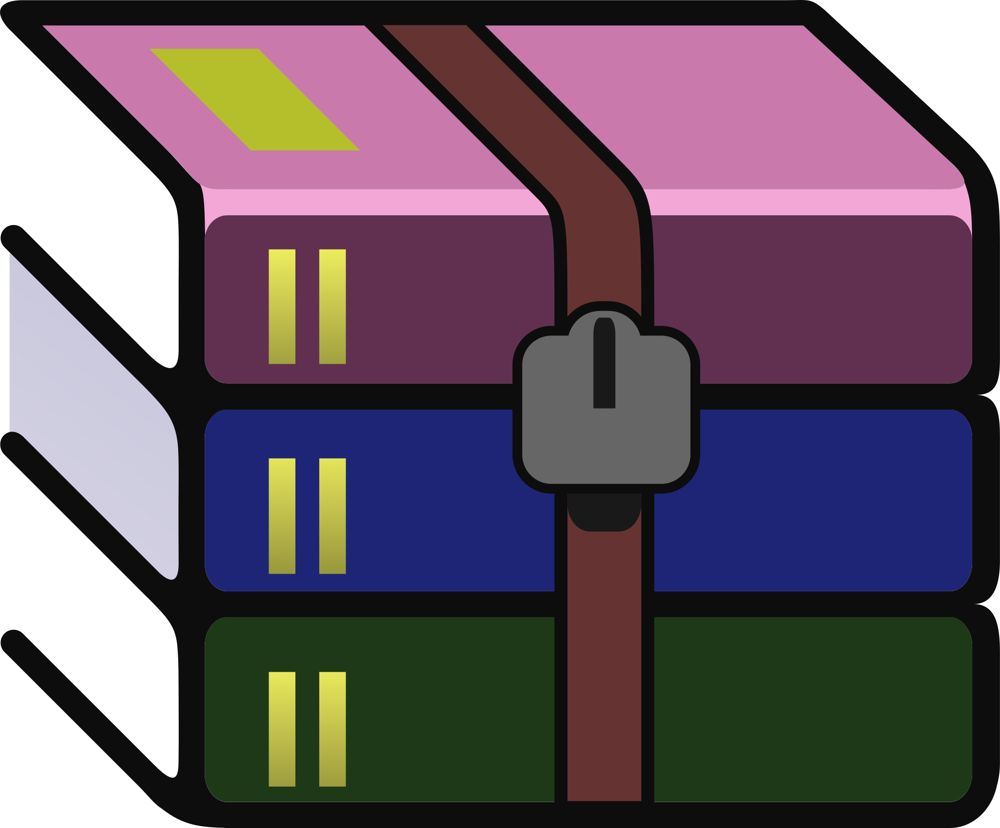

For Desktop
- Browsers:
-

LibreWolf: Privacy focused fork of Firefox. -
 Brave: No ads, privacy respecting chromium based browser.
Brave: No ads, privacy respecting chromium based browser.
- Chrome: Google Services Integration.
-

Tor: Onion Routing.
- Android Tools:
-
 SDK Platform Tools: Make adb and below softwares work.
SDK Platform Tools: Make adb and below softwares work.
-

Scrcpy: Perfect android screen mirroring tool. - Universal Android Debloater Next Generation: Getting rid of bloatware and system apps.
-
- Local Send: Share files on same network, securely.
- Audio Relay: Using mobile an external speaker for your PC.
- Players:
- VLC Media Player: OG video player.
- ScreenBox: LibVLC-based media player.
-
 Stremio: Need to add TPB+ to stream nice things.
Stremio: Need to add TPB+ to stream nice things.
- YT-DLP: Command-line based tool (Fork of yt-dl) to download media. Use Deno to solve JS.
- FFmpeg: Help in downloading specific quality with yt-dlp. Can be used for local video rotation and more.
- Big Tech Alternatives:
- Proton: Secure and private alternative to big techs.
-
 Tuta: Privacy focused mail and calendar.
Tuta: Privacy focused mail and calendar.
-

Ente: Private focused alternative to Google Photos.
Security:
-

VeraCrypt: Swiss knife for encryption. -

PortMaster: A nice firewall and network monitoring tool. - Ensu: One step install local ai.
-
 Lumo: Ai chatbot by privacy focused company, Proton.
Lumo: Ai chatbot by privacy focused company, Proton.
- Duck Ai: Annonymous front end for chatgpt, claude, mistral etc by Duckduckgo.
- Sumatra PDF: Free, open-source pdf viewer.
-
 VS Code: Default standard for coding.
VS Code: Default standard for coding.
-
 Git: Keeping a track of changes, pushing it to Github and collaborating with professionals.
Git: Keeping a track of changes, pushing it to Github and collaborating with professionals.
-

Standard Notes: End to end encrypted notes taking app. -

Obsidian: Local markdown notes taking app with helpful extensions and lovely themes. - Fluent Reader: Nice, open-source RSS feed reader.
- Flameshot: Free & open source screenshot software.
- AnyDesk: Remote desktop.
- Thunderbird: Private email client.
-

Winrar: Most humble extractor. - Komorebi: Best tiling for windows